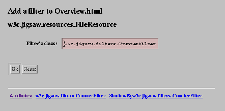
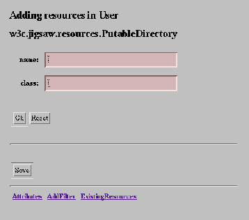

Jigsaw uses the meta-resource description to generate automatically editors for specific resources.The generated editors actually uses HTML form, although this may change in the future. The fact that these editors are automatically generated makes them share the same user interface, which we describe in this document.
To give some insights about how the resource editors work, we will describe two representative instances of them: the FileResource editor, and the DirectoryResource editor.
While reading this section, it might be a good idea to have another window displaying the FileResource reference documentation. You might also want to browse around its api documentation.
We will start by showing a screen dump of the file resource editor (this
screen dump has been generated out of the document you get when you point
your browser to /User/Overview.html).
 |
If you have read the administration guide for the property editor, this may sound familiar to you. Anyway, we'll re-describe the general layout of the form here. The form is made of three distinct zones:
w3c.jigsaw.resources.FileResource).
Just being curious, you may want to follow the AddFilter link, which should popup a form similar to the one below:
 |
The form card zone has changed, it now displays an area were you can
type in the class of the filter you want to add (see the
reference manual on filters for the
xhaustive list of them). Note also that the last zone now displays only an
Attribute link, that you may follow to go back to the previous form
card. Let's continue here by adding a filter to the
/User/Overview.html resource. We'll just add a
CounterFilter
(a filter that counts the number of hits to some resource). We tyoe in the
filter's class name w3c.jigsaw.filters.CounterFilter, and press
the OK button. Here is the new form that you get back:
|  |
Notice the two new links at the bottom of the form: they allow you to respectively edit the filter attributes, and the attribute values the filter shadows for its target (see the Jigsaw architectural overview for more informations on shadowed attribute values).
By now, you should know enough to use the generic editor. You may want to
remove the CounterFilter filter from the /User/Overview.html
resource, by following the w3c.jigsaw.filters.CounterFilter link,
and pressing the Remove button that will appear here.
You may now want to have two additional windows, one displaying the DirectoryResource reference guide, and the other displaying the DirectoryResource api documentation.
The directory resource editor is very similar to the file resource editor,
however, it provides two additional form cards to display (and modify) its
existing children resources, and to add new children resources. To get acquainted
with these two new kind of forms, we will pop up the directory resource editor
on the /User resource (which is a DirectoryResource instance).
By pointing your browser to /Admin/Editor/User, and following
the ExistingResources link you should get the following (and now familiar)
form:
 |
We still have our three zones, the title zone indicates that we are editing
a DirectoryResource whose name is User. The bottom zone shows
the usual navigation links. The form card zone, however, now displays the
list of children resources of the directory resource. You can follow any
of the links to edit the corresponding resource. There is also a new
Command field, to indicate what operations you want to perform on
the marked children resources. To mark a resource, click on the checkbox
at the right of its name. You can then execute one of the selected command
by pressing the OK button. The update command will update any
attribute that depends on the wrapped file content, the remove command
will delete the resource (but not the underlying file), and the
reindex command will re-run the
resource factory to make it create
a new resource for the wrapped file (this is usefull if you have changed
your resource factory configuration).
By following the AddingResource link, you will get the following form:
|  |
This form prompts you for a resource name, and a resource class (consult the reference manual for the list of available resources). Fill both of them to create a new resource, and press the OK button: the new resource is created, and you will be relocated to a suitable editor of it.
Jigsaw Team
$Id: resedit.html,v 1.1 2010/06/15 12:20:58 smhuang Exp $